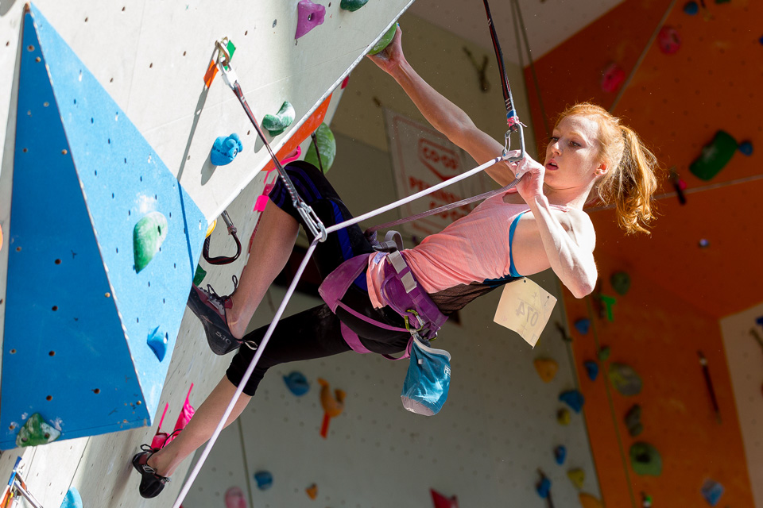
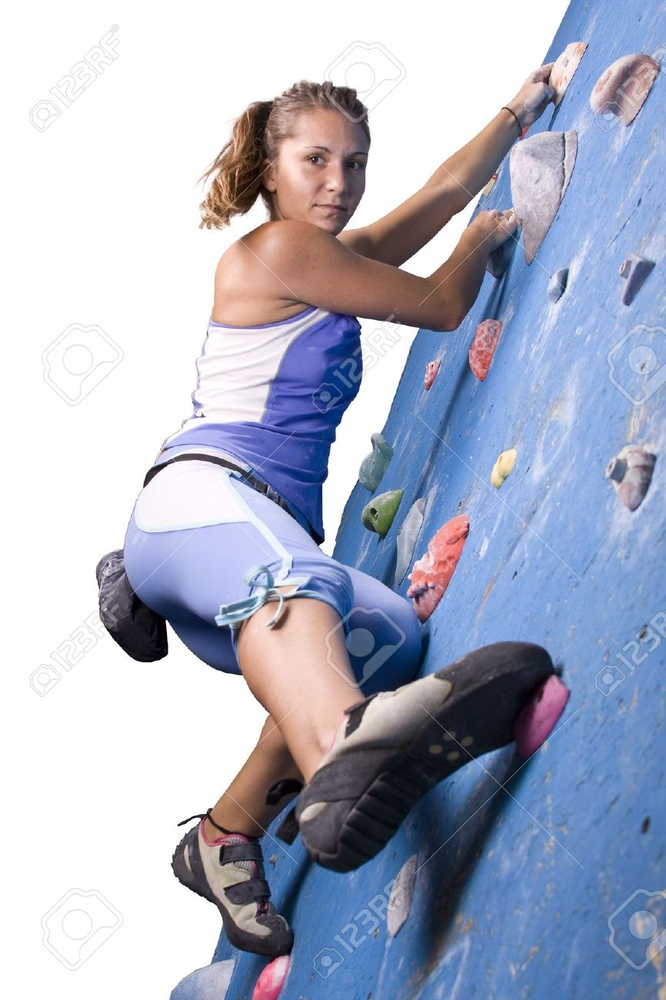
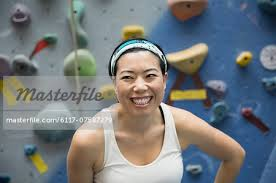

Here is our dedicated staff!

Carrie Pakingstaff - Coach/Route setter
Carrie began climbing through St. Mary's Secondary School and soon after joined a youth climbing
team at the Ascenders. It has now been three and a half years since Carrie walked into the climbing
gym and has had the opportunity to travel to Europe, nationals and many exciting places around
Canada as a team member. These days Carrie helps climbers, from kids to adults, develop their skills
as a part-time coach and by teaching introductory lessons.

Cynthia Mendezo - Coach
Cynthia started at the Ascenders as one of the original climbing team members, and she hasn't
been able to leave since! After graduating from St Mary's, she gained her CGI Level II certification
and has found her passion through coaching the Ascenders youth teams. When she is not coaching she
can be found studying hard for her BA in Recreation and Health Education, or preferably traveling
and getting outside whenever she can!
